效果、数值都不改。每位都是这件遗物原来的主人，手里拿着它。下面是 12 位立绘（女 8 男 4），后面是购买界面的 3 套布局（真实游戏截图）。
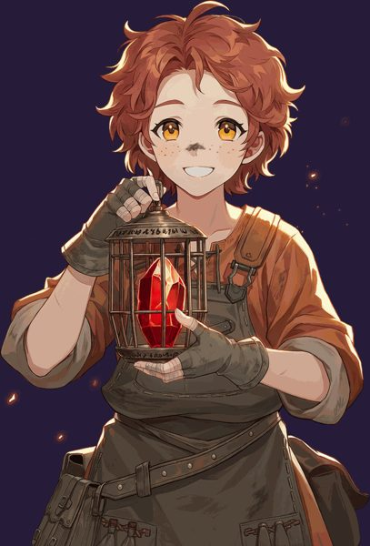
灰炉学徒 · 莉娜女 · 普通铁框上的炉印还没刻完，她就提着灯出了门。第一个跟你上路的，总是她。
团旗烧掉半幅那夜，她还在桥头转着香炉。菲奥娜到现在都以为她走散了。
巴尔德温的同伴。香炉留在第三百级石阶上，人没回来；他说，回来就是为了把它拿走。
伊索尔德的抄书学徒。师父抄名字，她抄法书；水漫上来那天，她先救了这一本。
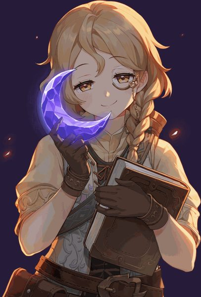
遗城账房 · 米莉女 · 罕见遗城商会的账房。月亮停了，账也停了，她还是每天把利息算一遍。
补咒王维斯的侍钟人。回声铃敲一次响两次，第二声，是他替王咒听的。
药方锁在王城里，药瓶却一只只跟着她跑了出来。每次出发，她都往你手里塞一瓶。
一辈子盯着王咒的裂缝变宽。他说看了这么多年，总得有人替他上去看看。
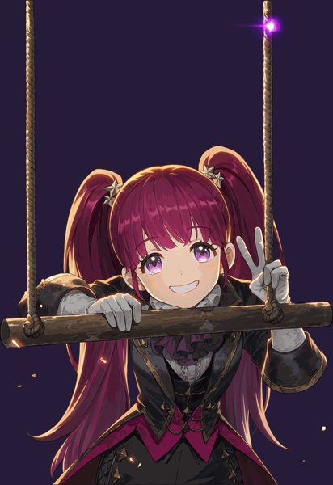
终幕杂技师 · 洛蒂女 · 罕见遗城坠落前，她演完了最后一场。所以最后那一手，总留给她压轴。
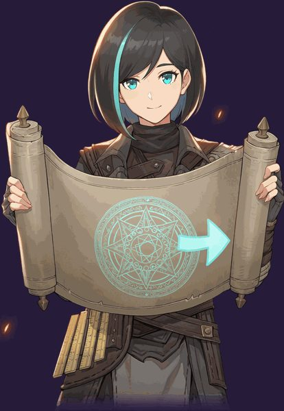
匠会制图师 · 葛蕾塔女 · 稀有她手里只有王咒残图的左半张。右边那位会什么，她照着就能画出来。
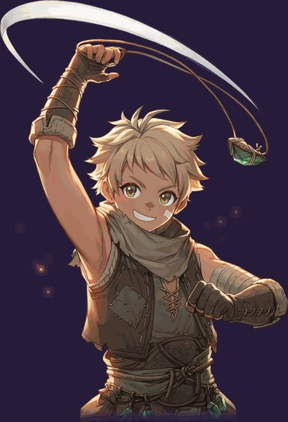
荒原投石少年 · 卡尔男 · 稀有用一根投石索打落过王室的信鸽。身边的稀罕人越多，他打得越准。
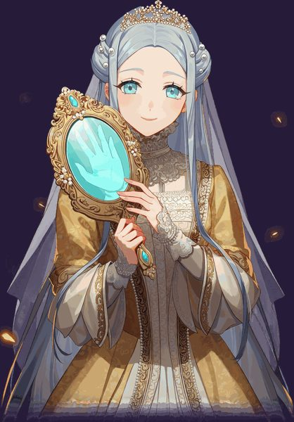
镜廷女官 · 希尔妲女 · 传奇替四王擦了一辈子的复影金镜。镜子照出来总缺一角，她便把你的一样东西照进去补上。
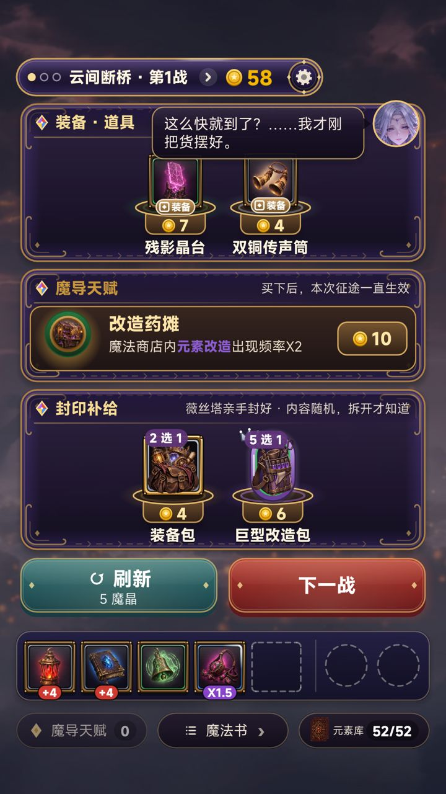
现在的商店（对照）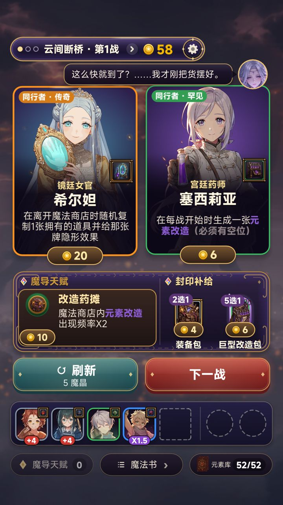
A · 立绘卡（推荐）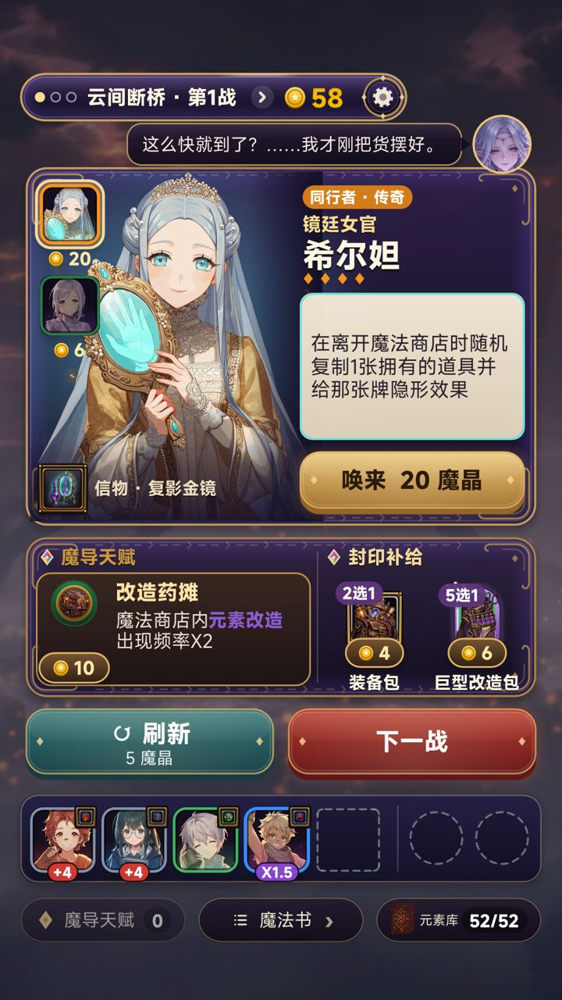
B · 主角站位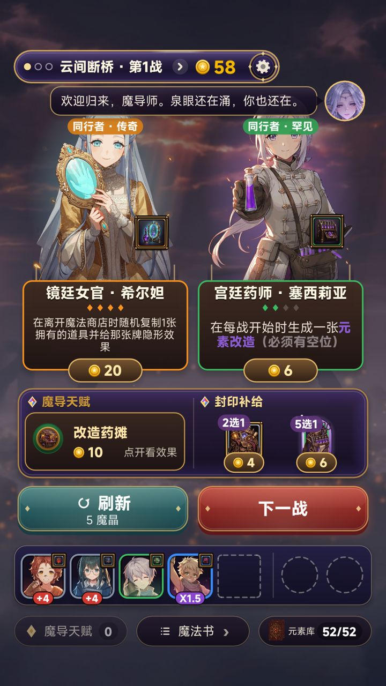
C · 同场站立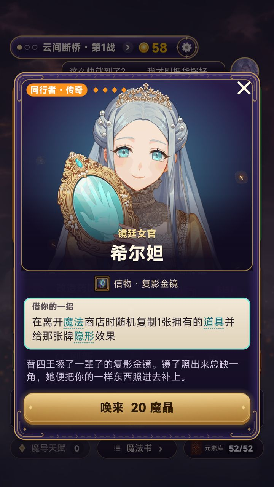
点开同行者（三套共用）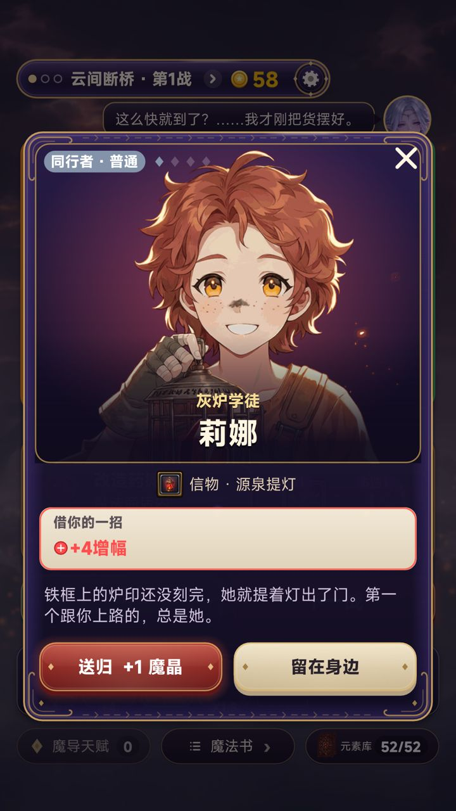
点同行者栏里的头像：送归 / 留在身边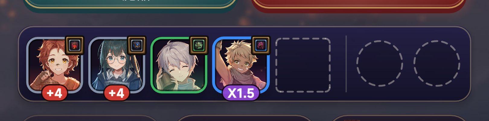
同行者栏特写